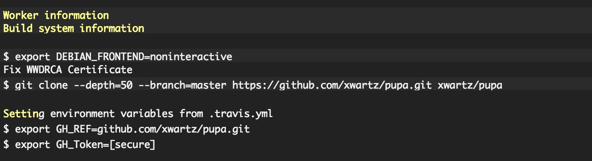

travis-ci 是一个免费的持续集成服务，
所以就想着法子来利用它省去一些体力活的工作。简单来说其实就是做一些脚本执行任务。
我们一般使用 travis-ci 来自动执行测试任务，现在我想让它来自动更新我的博客文章。
当我 push 了文章到 github 之后想让它自动更新到 gh-pages(其实不限于文章)。
使用 Hexo 写博客文章的时候，有几种方法都能比较方便的更新到 github。
方法一：
使用 Hexo 官方提供的方式，在 _config.yml 文件下添加配置
|
|
然后在 package.json 添加如下脚本
|
|
然后当你在 master 分支更新了博客之后，只需要执行命令 npm run deploy 来生成静态页面，
并且 deploy 到 github 的 gh-pages。
当然，你首先得已经安装好了模块依赖(npm install)。
这其实还算比较方便的，如果你只是想写写博客文章，每次也就跑一个脚本就够了，并没什么问题。
但是有时候，当你的博客需要别人的贡献时，比如可以让别人投稿，那就会需要 merge pull request。
然而 merge 之后，你必须 pull 本地仓库为最新的，然后再执行 npm run deploy 才会更新到博客。这就会比较麻烦了。
当然一般来说个人博客，遇到这种事还是比较少的，毕竟一般都是自己写文章。
但是如果你要维护的是一个比较热门的开源库文档呢，那你就得重新考虑自动化的必要性了。
方法二
使用 travis-ci 提供的持续集成服务。
这里我默认你已经会使用基本的 travis-ci 配置了，请自行看文档 docs。
首先需要 Github 提供的 Personal Access Token
请到个人设置里创建一个 Personal access tokens。
安装 travis 命令行
gem install travis
生成加密的 Personal Access Token
travis encrypt -r owner/repo GH_Token=Your_Personal_Access_Token
owner/repo: 你的 Github 仓库名字(<用户名>/<仓库名>)，比如我的博客仓库 xwartz/pupa。
GH_Token: 你上一步新建的 Personal Access Token。
以上命令支持之后，将会创建一个加密后的 token，将被写入 .travis.yml
|
|
更新 .travis.yml
|
|
secure 将被 travis ci 解密之后使用

完整的 .travis.yml 配置如下：
|
|
详情可查看我的仓库 pupa